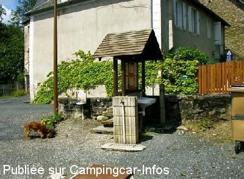
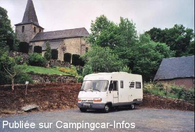
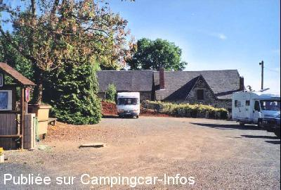

ASN = Aire de services avec stationnement nuit possible de :
SADROC
(N° 132)
Accès/adresse :
Chemin du Château
19270 SADROC
19270 SADROC
Latitude : (Nord) 45.28322° Décimaux ou 45° 16′ 59′′
Longitude : (Est) 1.54852° Décimaux ou 1° 32′ 54′′
Tarif : Gratuit
Type de borne : Autre
Services :


Épicerie
Autres informations :
Ouvert toute l'année
6 emplacements éclairés, stabilisés au centre du bourg
Tel : + 33(0)555 845 190

Le 18/10/2009 par Phil.B

Le 08/05/2003 par nomade 59

Le 08/05/2003 par nomade 59
de
jojo 33
le 30/12/2015 :
La seule aire CC ou l'eau ne soit pas coupée en décembre dans un rayon de 20 km.
Merci a la municipalité.
La seule aire CC ou l'eau ne soit pas coupée en décembre dans un rayon de 20 km.
Merci a la municipalité.
de
Mouki
le 29/09/2015 :
De passage le 25 sep 2015 en compagnie d'un Anglais et d'un Allemand. Très bien pour le calme et l'épicerie mais je rejoins le commentaire de Catherine : intervention intempestive de la voisine qui nous a menacés des gendarmes si nous ne nous mettions pas exactement dans les marques des emplacements ! Le tracé ne tient d'ailleurs pas compte des dimensions des véhicules. Merci à la commune ... mais pas à la voisine !
De passage le 25 sep 2015 en compagnie d'un Anglais et d'un Allemand. Très bien pour le calme et l'épicerie mais je rejoins le commentaire de Catherine : intervention intempestive de la voisine qui nous a menacés des gendarmes si nous ne nous mettions pas exactement dans les marques des emplacements ! Le tracé ne tient d'ailleurs pas compte des dimensions des véhicules. Merci à la commune ... mais pas à la voisine !
de
Dede02
le 18/03/2015 :
Bonjour
Sommes sur l aire de Sadroc, rien a dire emplacement bien pense . Proprietaire de la superette super sympa avec tout, meme du gaz depot de pain .Merci a la commune .
Bonjour
Sommes sur l aire de Sadroc, rien a dire emplacement bien pense . Proprietaire de la superette super sympa avec tout, meme du gaz depot de pain .Merci a la commune .
de
robert dehame
le 10/11/2014 :
Vraiment sympa.Trés calme,bien aménagée,bons produits à l'épicerie.Merci.
Un exemple d'hospitalité!!!
Vraiment sympa.Trés calme,bien aménagée,bons produits à l'épicerie.Merci.
Un exemple d'hospitalité!!!
de
Coco 24
le 26/08/2014 :
La vue en face, l'épicerie avec dépot de pain, l'électricité, la gratuité, le calme : tous les ingrédients pour y rester et y revenir
Merci M le Maire et votre conseil municipal, c'est un élu qui parle!!!
La vue en face, l'épicerie avec dépot de pain, l'électricité, la gratuité, le calme : tous les ingrédients pour y rester et y revenir
Merci M le Maire et votre conseil municipal, c'est un élu qui parle!!!
de
catherine
le 22/09/2013 :
de passage au mois d'aout 2013 un endroit calme a part un voisin qui m'aime pas les camping caristes il faut mieux se mettre dans les emplacements car il viens nous le dire (c'est pas un camping ici ) merci a la commune et l'acceuil a l'épicière .
de passage au mois d'aout 2013 un endroit calme a part un voisin qui m'aime pas les camping caristes il faut mieux se mettre dans les emplacements car il viens nous le dire (c'est pas un camping ici ) merci a la commune et l'acceuil a l'épicière .
de
sybrub
le 01/05/2013 :
nous y sommes passés le 15/04/2013. Petite aire sympa gratuite avec épicerie à proximité.
nous y sommes passés le 15/04/2013. Petite aire sympa gratuite avec épicerie à proximité.
de
mantoni
le 05/07/2011 :
de passage le 04/06/2011
il y a bien 6 emplacements pour la largeur ok un peu juste pour la longueur pour les cc de + de 6 metres depassement d'un bon metre cela fait hésiter
de passage le 04/06/2011
il y a bien 6 emplacements pour la largeur ok un peu juste pour la longueur pour les cc de + de 6 metres depassement d'un bon metre cela fait hésiter
de
Voyageur 19
le 03/07/2011 :
Il ne faut pas quand même exagérer.... A part le fait que cette aire existe, il n'y a rien d'extraordinaire.
Il vaut mieux faire 13 Kms de plus et aller au lac de Poncharal-Vigeois. Voir mon commentaire.
Il ne faut pas quand même exagérer.... A part le fait que cette aire existe, il n'y a rien d'extraordinaire.
Il vaut mieux faire 13 Kms de plus et aller au lac de Poncharal-Vigeois. Voir mon commentaire.
de
Canto
le 19/05/2010 :
Formidable pour tout ! Pour l'aire avec l'électricité gratuite, le calme (même si le carillon de l'église se manifeste à 7 h!) et la vue. Pour le village et sa supérette avec croissants et pain à quelques mètres. Merci M le Maire et son Conseil Municipal, nous reviendrons vous voir !
Formidable pour tout ! Pour l'aire avec l'électricité gratuite, le calme (même si le carillon de l'église se manifeste à 7 h!) et la vue. Pour le village et sa supérette avec croissants et pain à quelques mètres. Merci M le Maire et son Conseil Municipal, nous reviendrons vous voir !